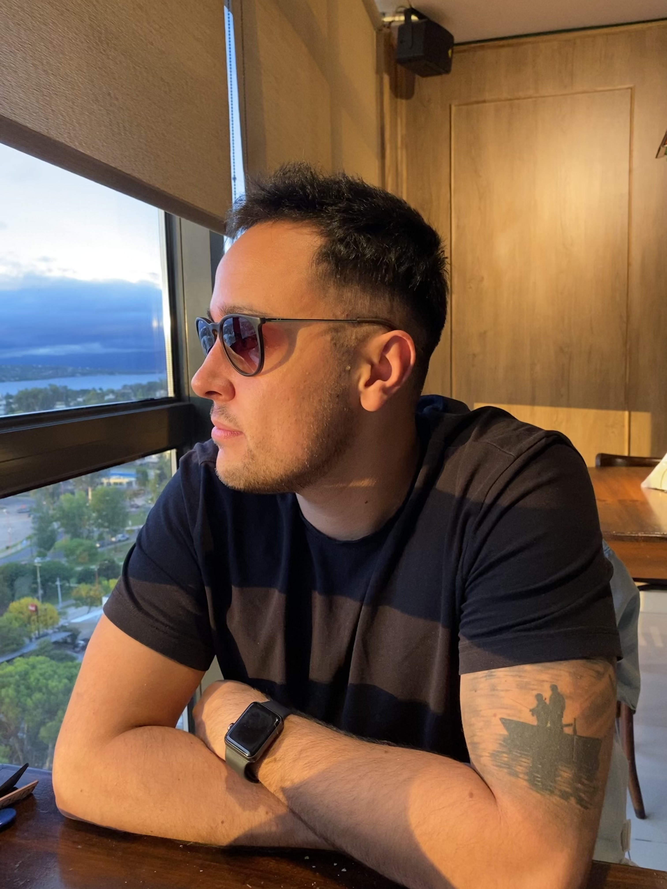

Soy Marcos, un estudiante de Ingenieria en Sistemas, a quien le apasiona la resolucion de problemas y la tecnologia.
Comence mi vida universitaria estudiando Administracion de Empresas, pero la pandemia me dio una oportunidad para hacer un poco de instrospeccion
y reflexionar; y asi me di cuenta que no me gustaba lo que estaba haciendo con mi vida, y ahi fue cuando curioseando me puse a programar y aqui me
encuentro hoy, en un proceso de aprendizaje continuo, dando mis primeros pasos en el mundo del desarrollo de software y buscando mi primera oportunidad
laboral.
En este momento estoy cursando la carrera de ingenieria, y la carrera de desarrollo front end de Coderhouse, ademas de aprendiendo de manera autodidacta con cursos online en distintas plataformas como freeCodeCamp, the-odin-project y edX, intentando conocer un poco mas sobre algoritmos y estructuras de datos. Mas alla de la programacion y la tecnologia, me fascinan la nieve, el snowboard y la fotografia!
En este momento estoy cursando la carrera de ingenieria, y la carrera de desarrollo front end de Coderhouse, ademas de aprendiendo de manera autodidacta con cursos online en distintas plataformas como freeCodeCamp, the-odin-project y edX, intentando conocer un poco mas sobre algoritmos y estructuras de datos. Mas alla de la programacion y la tecnologia, me fascinan la nieve, el snowboard y la fotografia!